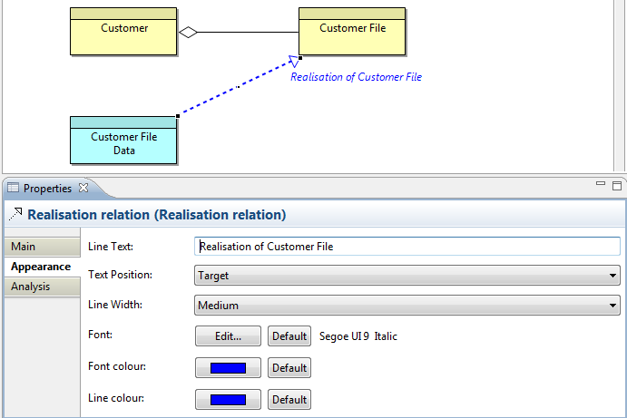

A Connection's (Relationship's) properties can be edited by selecting the connection on the View and opening the Properties Window. See the section, Relationship Connection Appearance Properties, for more information.
Text can be added to a connection (on the "Main" tab) and displayed in one of three positions, and the thickness of the line itself can be set as can the text's font and colour. The following screenshot shows a connection with a medium line width and text showing in the “Target” position with a blue italic font and purple line colour:

Setting a Connection's Text, Position, Line Width, Font, Font and Line Colour